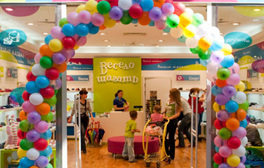

При уходе за обувью не стоит увлекаться кремами. Вечером тщательно протрите обувь влажной тряпочкой. А вот царапины, ссадины "загримируйте". Крема должно быть не много, иначе могут остаться жирные пятна.
Чтобы удалить пятна и освободить поры кожи от остатков крема, кожаную (но не лакированную) обувь раз в неделю необходимо протирать тряпочкой, смоченной в бензине или скипидаре. Затем почистить кремом и отполировать.
Промокшую обувь можно высушить, натолкав внутрь газет или тонкой бумаги. По мере намокания бумагу нужно менять.
Чтобы устранить неприятный запах из обуви, ее нужно протереть внутри перекисью водорода.
Белую кожаную обувь лучше всего мыть поролоновой губкой или мягкой щеткой, смоченной в слабом растворе стирального порошка. Затем смыть его теплой водой, вытереть обувь досуха и смазать бесцветным кремом.
Если обувь пересохла, смягчить ее можно, втерев касторовое или растительное масло, глицерин либо вазелин. После чего обувь отполировать.
Содранный на обуви клочок кожи можно легко "прирастить". Для этого необходимо смазать поврежденное место и его тыльную сторону тонким слоем лака для ногтей или клеем БФ-2 и на несколько минут сильно прижать пальцем обработанный участок.
Не носите лакированные туфли при температуре выше 25 С°, иначе лаковая пленка растянется, потеряет прочность и первоначальную форму, а затем потрескается.
Лакированную обувь необходимо периодически смазывать глицерином, вазелином или касторовым маслом, аккуратно нанося их ватным тампоном. Излишек масла снять через 15-20 минут и натереть поверхность обуви бархаткой.
Ношеные лакированные туфли заблестят как новые, если смазать их яичным белком.
Сильно загрязненная замшевая обувь отлично чистится мыльной водой с добавлением нескольких капель нашатырного спирта.
Замшевую обувь в дождливую погоду носить нежелательно, иначе на ней появятся белесые пятна, от которых будет трудно избавиться. Чистить ее надо аккуратно. Стряхните пыль, снимите маленькой щеточкой грязь, подержите недолго над паром. Ворсистая поверхность станет как новая.
Для лучшей сохранности обуви неплохо бы купить специальные колодки (некоторые набивают обувь бумагой). Приходя домой, вы вставляете их в обувь, и пара долгое время сохраняет форму. Полноту и размер для таких колодок регулируют поворотом винта.